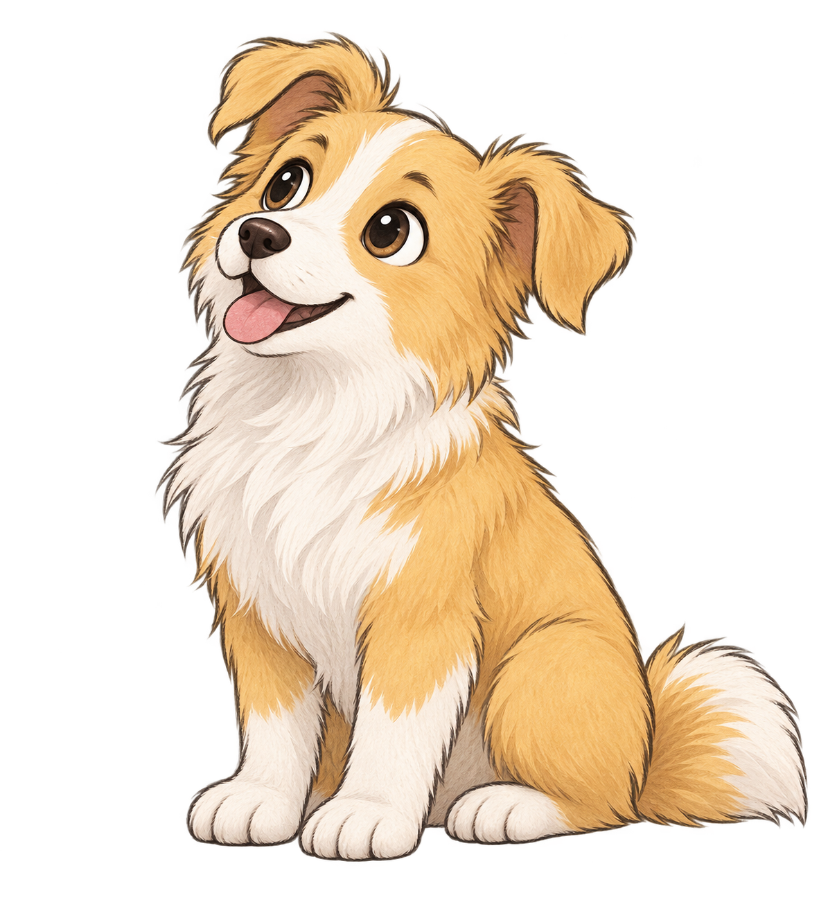
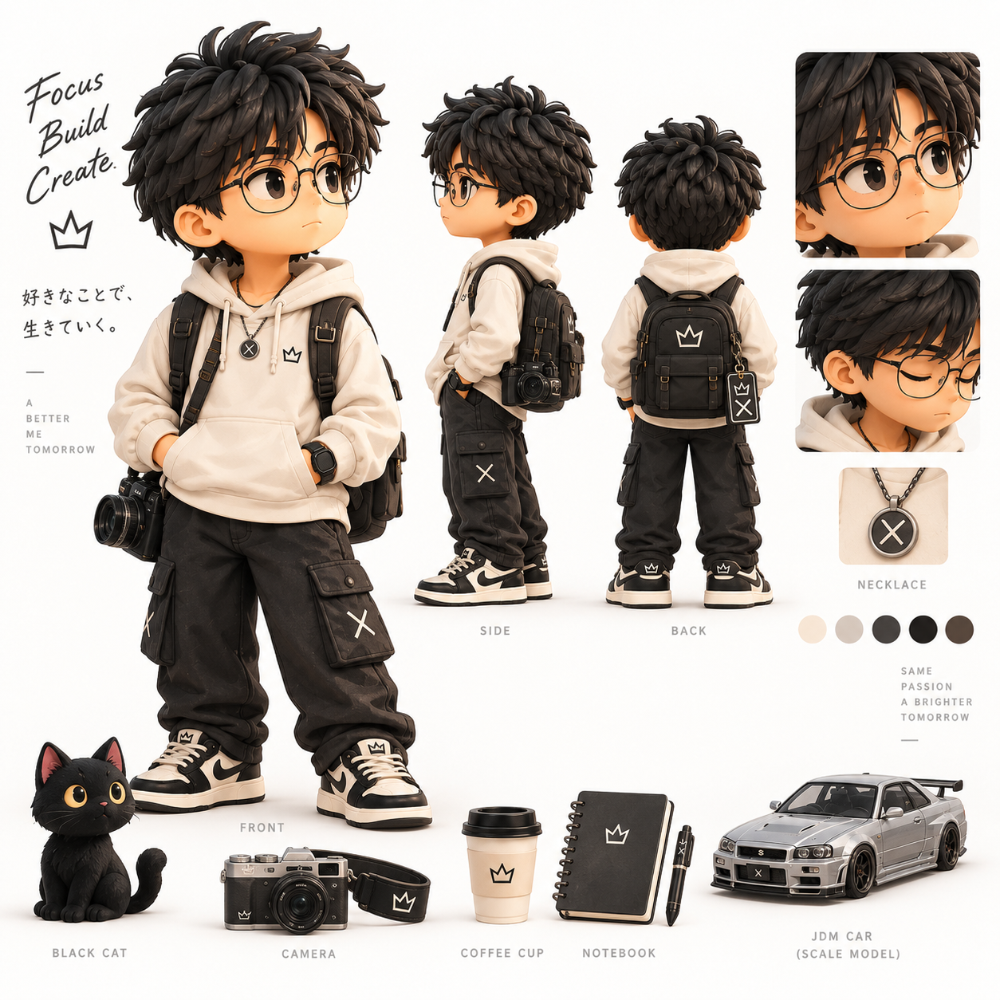
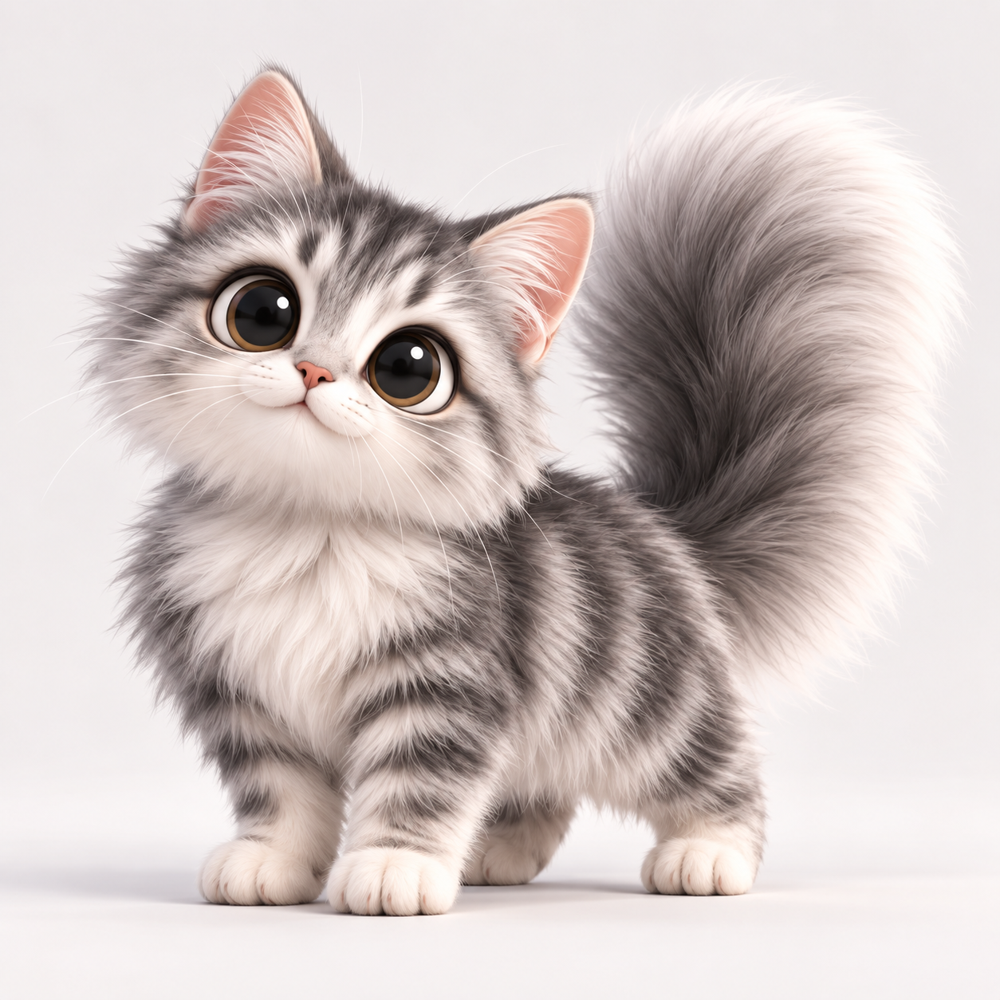

工具 / 01↗
把复杂的事
讲清楚。
从工作流、数据和界面里，找出更顺手的下一步。
RESEARCH · DESIGN
一些还在生长的作品
从工作流、数据和界面里，找出更顺手的下一步。
RESEARCH · DESIGN
让文字、照片和未完成的想法有地方落下来。
OPEN短一点，也真实一点
“ 好的界面，应该让人更快回到事情本身。”
读一段 →
03 / CAT STUDY这是一个小小的个人空间。用来放正在做的东西、偶尔写下的句子，和下一次想试试的方向。
打个招呼 ↗